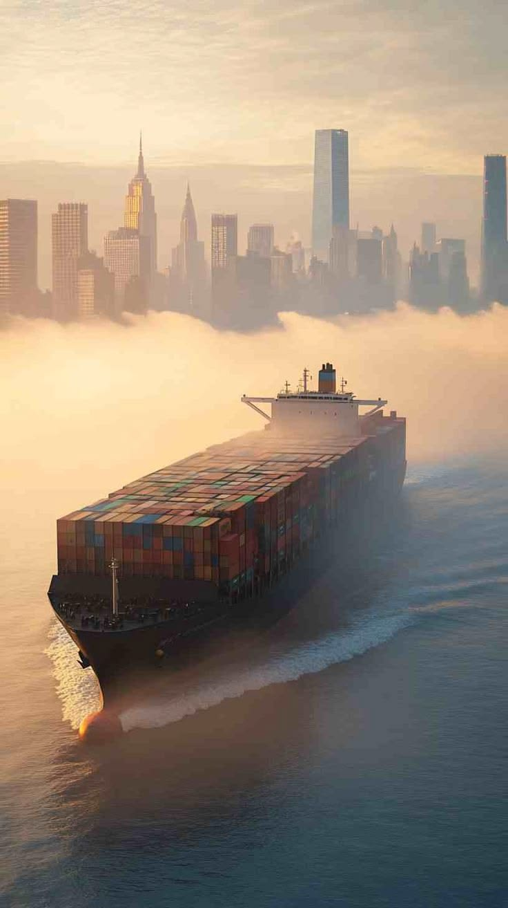

Thai Union 50th Anniversary · Mood & Tone Direction
Two Ways to
Tell 50 Years
แนวทางภาพ สี และสไตล์การนำเสนอ 2 รูปแบบ สำหรับ Virtual Museum & Brand Hub ฉลอง 50 ปี Thai Union ทั้งสองแบบใช้ระบบสีและฟอนต์จาก CI ชุดเดียวกัน แต่ต่างกันที่วิธีเล่าเรื่อง